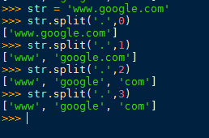

Python的split（）函数就是把一个字符串按某个特定的参数（默认为空格）（参数在字符串中是存在的）分割为多个字符串，存放在列表中，并返回（return）
split翻译为分裂。 split()就是将一个字符串分裂成多个字符串组成的列表。
split()当不带参数时以空格进行分割，当代参数时，以该参数进行分割。
//---当不带参数时
example：
st0= ' song huan gong '
print(st0.split())
结果为：
['song', 'huan', 'gong']
结论：当不带参数时，默认是以空格作为参数，不管空格在哪，或者有几个 全部被镐掉了！
//---当带参数时 这种情况就不能按照上面的方式去理解了
example：
st0= 'iisongiiihuaniiiigongi'
print(st0.split('i'))
结果为：
['', '', 'song', '', '', 'huan', '', '', '', 'gong', '']
分析：
这个结果可能就有点出乎意料了并不是想象中的['song', 'huan', 'gong'] 而是多了很多空字符串元素'',这个怎么理解呢？ 我的理解方式是，当带参数时，我们得把字符串想象成一块五花肉，我们要做 一件奇葩的事情，就是将肥肉丢到垃圾桶，把瘦肉留下。 比如'iisongiiihuaniiiigongi'这串五花肉，'i'就是要丢掉的肥肉，每次还只能切 'i'这么多。 切的时候是从左到右，一刀下去肥肉'i'丢掉，刀刃左边的部分拿走作为list的一个元素， 刀刃右边的就是剩下的，那么继续切剩下的部分，直到切完。
'iisongiiihuaniiiigongi'这块肉比较特殊：
其一、他的开始和结尾都有i，而且i还不止一个！这样按照上述的方法就会切出 空气，就是列表中我们看到的'', 空字符串元素。 如'iisongiiihuaniiiigongi'，当第一刀下去的时候，第一个i被丢到了垃圾桶， 而刀刃的左边什么都没有，所以列表的第一个元素就是'',空字符串元素。 一刀下去之后，就剩下'isongiiihuaniiiigongi'。 所以第二刀下去之后，又得到一个空字符串元素，目前“肉”就剩下'songiiihuaniiiigongi'。 第三刀又切掉一个i，那么刀刃左边的就是song，所以第三个元素就是'song'。 直到切到最后，整坨肉就只剩下一个i了，使用最后一刀下去i被切掉了，刀刃的左边此时也 什么都没有了，所以最后一个元素任然是空字符串。
字符串分割的次数，从1开始计数：

字符串的分割
一个超级好的例子：
>>> str="hello boy<[www.doiido.com]>byebye"
>>> str.split("[")[1].split("]")[0]
'www.doiido.com'
>>> str.split("[")[1].split("]")[0].split(".")
>>> str.split("[")[1].split("]")[0]
'www.doiido.com'
>>> str.split("[")[1].split("]")[0].split(".")
['www', 'doiido', 'com']